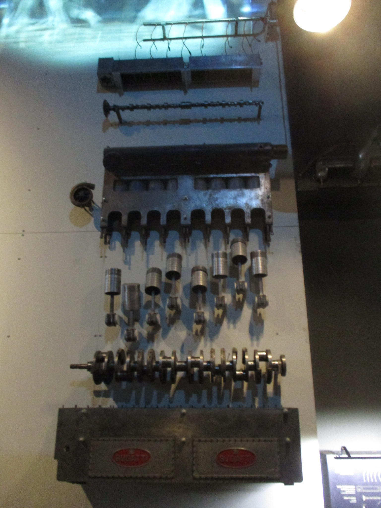
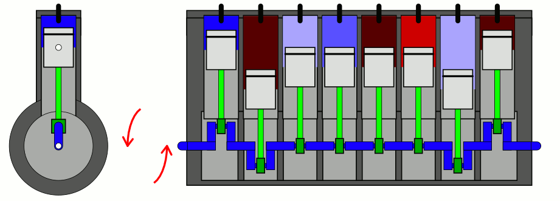
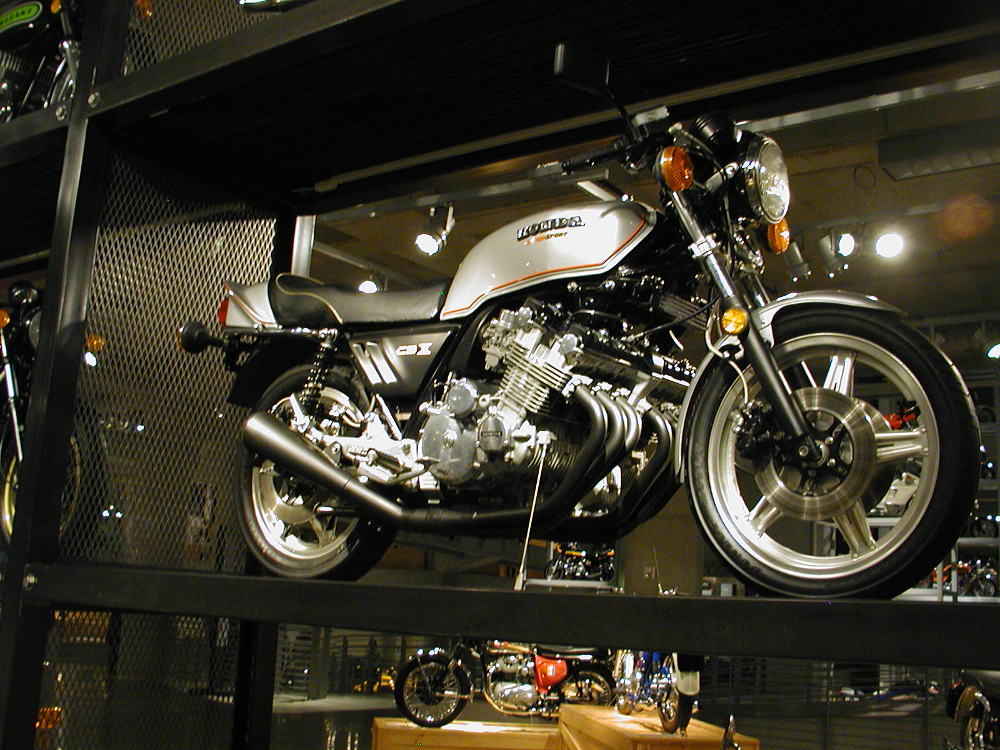
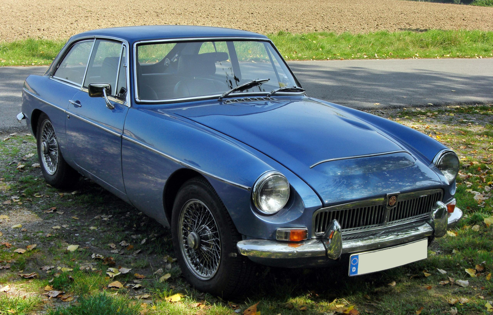
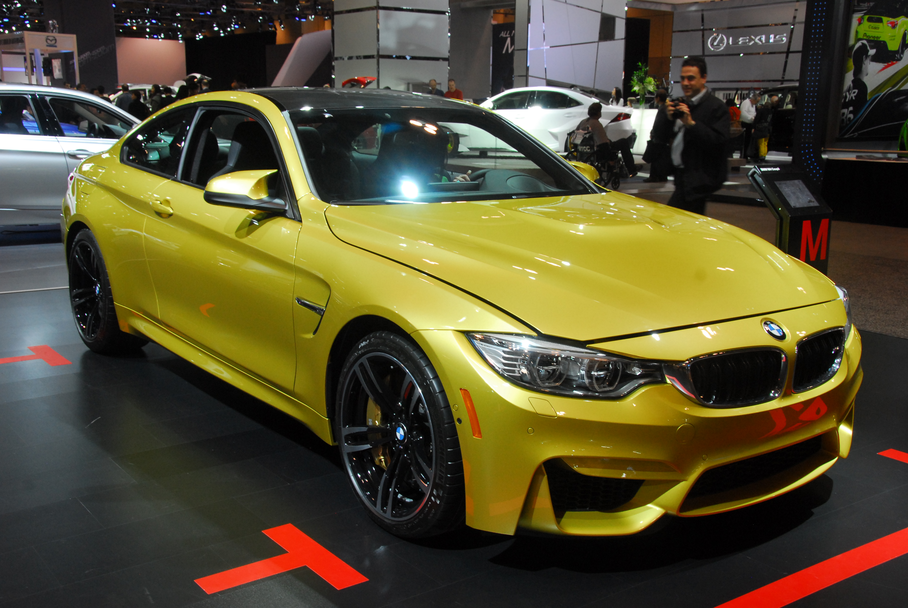
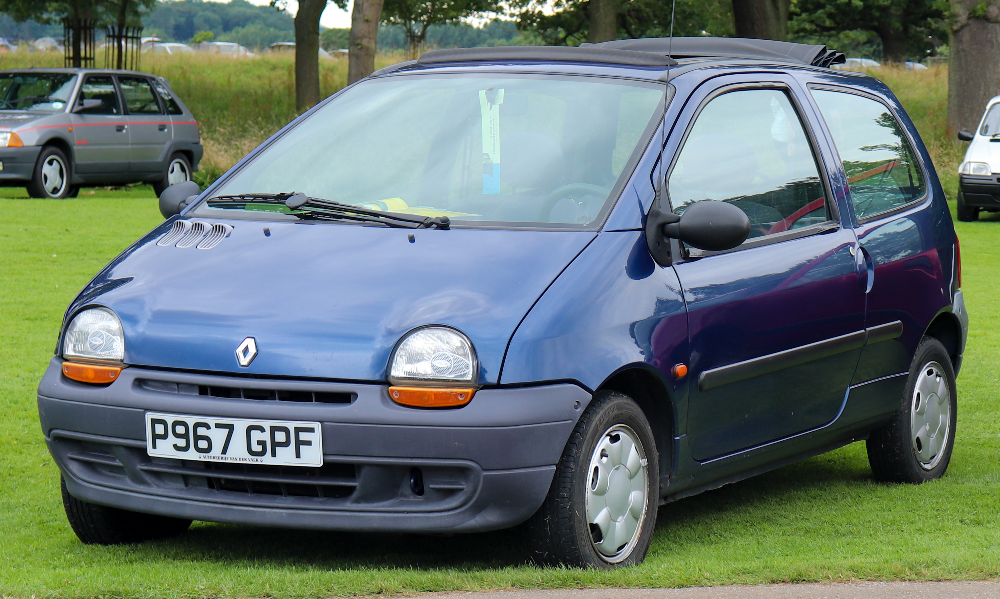

Le moteur en ligne est l’architecture de moteur à combustion interne la plus ancienne et la plus répandue. Il apparaît dès la fin du XIXᵉ siècle avec les premières automobiles à essence, comme celles de Karl Benz et Daimler, et se popularise rapidement grâce à sa simplicité et sa fiabilité. Cette architecture reste très prisée aujourd’hui pour sa mécanique simple et sa robustesse, bien qu’elle tende à être remplacée par les moteurs en V ou en W sur les véhicules très puissants ou sportifs.

Dans un moteur en ligne, tous les cylindres sont disposés les uns derrière les autres sur un seul vilebrequin,
ce qui facilite la fabrication, l’entretien et le refroidissement.
Chaque cylindre reçoit un mélange air-carburant qui est enflammé par une bougie (essence) ou par compression (diesel),
provoquant l’explosion du mélange. Cette explosion pousse le piston vers le bas,
transmettant le mouvement à la bielle, qui à son tour fait tourner le vilebrequin.
Selon le nombre de cylindres (3, 4, 6 ou 8), le moteur peut offrir un fonctionnement plus ou moins régulier
et une puissance adaptée aux besoins du véhicule.

| CBX 1000 | MG MGB | BMW M4 | RENAULT TWINGO |
|---|---|---|---|
| 1978 - 1982 | 1962 - 1980 | 2014 - 2020 | 1992 - 2024 |
 |
 |
 |
 |